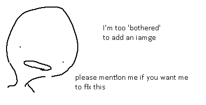

Status: No
I lied and made more games. Here's a collection of 3 unfinished Unity ones.
Itch
Didja know I made games? I forgot! Hahahahahahhahsdhs
Um. Yeah, here's a collection of some of them, there's more but they're so unfinished I haven't uploaded them.
2021
Wap's hellpit
Status: No
I lied and made more games. Here's a collection of 3 unfinished Unity ones.
Itch
Multiversal Betting Ranch

Status: Finished
GTMK2020 Gamejam game, never seen anything like it before. I might want to revisit.
Itch
Pokeman Ripoff

Status: Dead, Very Unfinished
This is based off a modified pokemon brick bronze, yet I fully coded it? Why?
RBLX
Go to the hopsital because u have a deadly disease

Status: Finished
Made this in a gameboy RPG maker.
Itch
Midnight Water
Status: Finished/ Not...
A simple point & click game I made in a week. Posted it on a Discord server, people said they enjoyed it. So I had a best decision to break the game and try to make it into a telltale like episodic game! I'm genius!
The badge is not possible to take.
RBLX
Cool Space Guardrian traingle

Status: Finished, Bugged
Made in school. It's okay, I wish to revise this... maybe...
MIT
Test66
Status: Dead
A 2.5D platformer where you can swap your view.
... This had promise
RBLX
A Random Galaxy Generator
Status: Finished
A simple proof of concept.
RBLX
Shiny and quest AWSOME EPIC COOL GAME!!! OBBY SIM
Status: Finished
What the fuck
RBLX
4 NIGHTS WITH FRICKS 2

Status: Finished, Bugged
The sequel. It has far more mechanics, I did it in school out of boredom.
Did you know I was making a Unity remake of this! Then I didn't! Wow!
MIT
Get a slushie from 711
Status: Finished
A PS derivative. Um.
3rd Sequel to the last game.
RBLX
(PurpSkittle4) Purple Stairs: Enter The Stairgeon
Status: Finished
MahBucket made Purple Skittles 3 where you eternally climb stairs in darkness. This is a fanmade sequel to PS 3.
RBLX
Shiny and quest AWSOME EPIC COOL GAME!!! OBBY SIM
Status: Nearly Finished, But I don't want to.
After the previous game I was pissed of making collectathons and this monstrousity arrived
RBLX
Adventure Of Classicaria / A ROBLOX QUEST: Quest For The Old Blox
Status: Dead, Very Unfinished
These games are two. I worked on one, and the character was scripted too hard so I made another. It's based upon the olden Roblox collectathons like Adventure Forward and Roblox Adventure. What good free experiences those were.
RBLX 1
RBLX 2
4 NIGHTS WITH FRICKS

Status: Finished
OMG Fnaf fangame??? Wow, that's original!
MIT
Neep City
Status: Dead
A 'Meep City' "Parody". Um. It has some really odd mechanics that are in-depth for no reason.
RBLX
Generic Sticks Quest For Happiness

Status: Dead, Very Unfinished
I tried to make a collectathon in Scractch what
MIT
Sizzle

Status: Finished
Some arcade Agariolike I made in schools probs
MIT
Rainbow Skittles

Status: Dead, Very Unfinished
Purple Skittles derivative. Most likely broken. Deriving PS is where I learnt how easy coding was.
RBLX
Button Pressing Buddies
Status: Dead, Very Unfinished
Wanted to make a roblox game, this is when I knew to code (a small amount).
RBLX
The first
Status: Dead, Unfinished
Wanted to make a roblox game, my first.
RBLX
Game
Status: ???
Description
Here